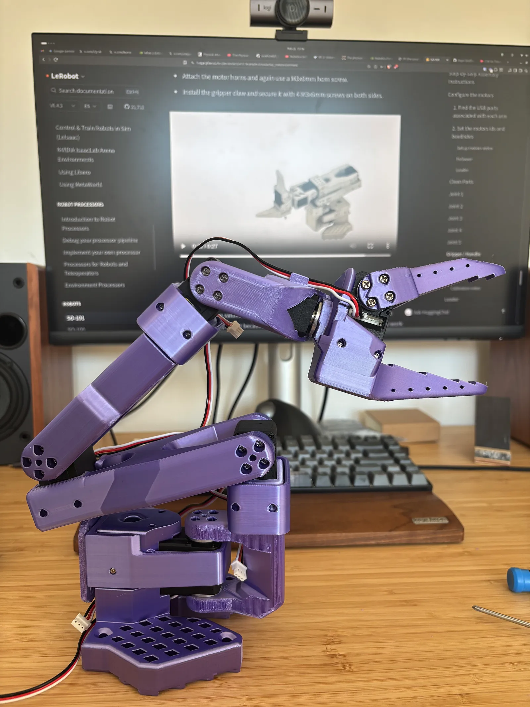
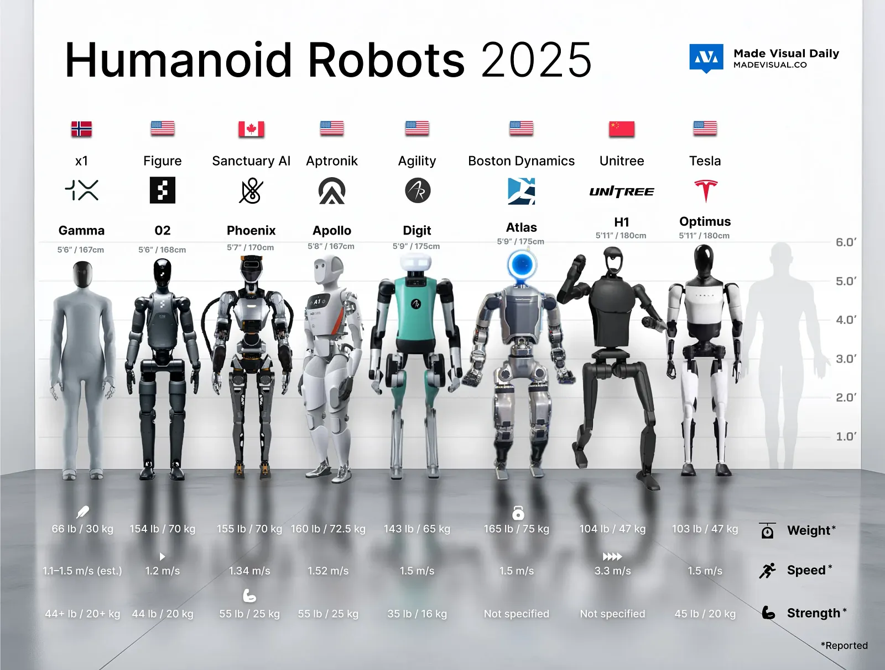
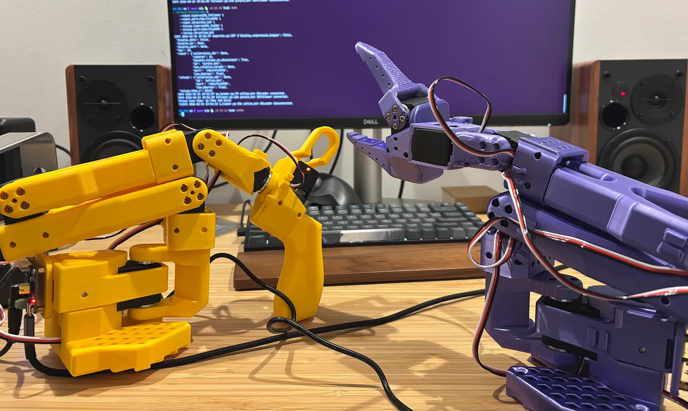

The moment I grabbed the leader arm, moved it slowly and watched the follower mirror every single action in real time. That was it. The trigger.
There’s something about seeing a machine you built with your own hands actually move that hits differently than anything you’ve experienced before in the software world.
It’s physical. It’s immediate. It’s hard. It’s real.
Now I just need to give it a brain.

I built some robotic arms
I 3D printed them. Part by part. With a 3D printer I bought, ordered some servomotors from AliExpress and followed open-source designs and instructions.
Two arms, built completely from scratch. (you can find some scripts that I created to calibrate the arms on my github repository)
The 3D printing took about 2 days for both arms. The most expensive parts were the servomotors, almost €20 each and you need 12 of them.
Did I assemble everything on the first try?
Ahah, no.
At one point I had fully configured the leader arm… as a follower. Wrong configuration, wrong setup, realized it only after everything was done. Had to redo it all from scratch.
So what is Physical AI?
Now you’re probably wondering, why did I build robotic arms at all?
Well to start, robotics is something that always interested me, and second because we’re at the beginning of something I can’t ignore.
You already know AI. You use it every day probably. But all the AI you interact with lives in the digital world. It reads text, generates images, writes code. 1s and 0s.
Physical AI is AI that acts in the real world. Through robots/machines. Through arms, legs, wheels, grippers, humanoids, drones, etc. It doesn’t just generate an answer or a cute cat image.
It does something in physical space.
We’re talking about:
Robotic arms assembling parts in factories
Humanoid robots working on car manufacturing plants
Agricultural bots harvesting crops autonomously
And much much more.
At first I really thought like everyone else that “Physical AI” was just another buzzword that someone invented with the word AI on it, just to sell more.
But I was wrong.

Robots have been “the future” for decades. What’s different now?
Well, AI.
The AI models powering robots today are fundamentally different from what existed 5 years ago. Vision-Language-Action models, or VLAs, can see their environment, reason about what they’re seeing and decide what physical action to take next. They’re built on top of the same foundation models that power today’s chatbots and image generators, but extended to produce real-world actions.
And the hardware is catching up fast. All thanks to AI.
The entry to hardware just lowered by a lot. Not in terms of capital to build the hardware itself but to understand what to build and how to build. Open-source designs, code and communities sharing knowledge have made it possible for someone like me to build a functional robotic arm on a desk in my home.
For decades, robotics was hard for a simple reason: you had to program every single movement by hand. Every scenario. Every edge case. Explicitly, in code.
VLAs and imitation learning broke through that ceiling.
Now a robot can watch you perform a task a few dozen times and learn to do it on its own (this is called imitation learning). It can handle objects it’s never seen. It can adapt when things don’t go exactly as expected.
This is the shift from programmed robots to learning robots.
It changes everything about what robots can actually be used for.
Simulation to the real world (sim-to-real)
You can’t just throw an AI model at a physical robot and hope for the best. Robots are expensive (it’s hardware and not a simple software rollback).
Mistakes are physical. A confused robot doesn’t just crash a server. It can break itself, break things around it, or worse, hurt people.
That’s where simulation comes in.
Tools like NVIDIA Isaac Sim and Gazebo let you build a full virtual replica of your robot and its environment. You can train it, test it, crash it a thousand times, and it costs you nothing. No broken parts. No downtime.
Isaac Sim in particular is remarkable. It uses the same physics engine that powers video game worlds, but tuned for robotics. You can simulate gravity, friction, sensor noise, even lighting conditions. The robot learns in a virtual world that’s close enough to the real one that the skills transfer.
This is called sim-to-real transfer. It’s one of the most important concepts in modern robotics.
Why does it matter? Because it means a robot can accumulate millions of hours of “experience” in simulation before it ever touches the physical world. Things that would take years in reality can happen in days.
That’s how you build robots that actually work.
Sim-to-real is one of my next steps. I want to simulate my arms in Isaac Sim, run experiments virtually, and then transfer what works to the physical arms on my desk.
The link between the virtual and the physical.
Finally some fun
I haven’t put AI on my arms. Yet.
Right now it’s pure teleoperation: I move one arm, the other follows. That moment alone was enough to trigger the curiosity in me completely into this new world of hardware.
Next, is teaching the arms tasks by demonstration. I move them through a motion a few dozen times, and it learns to replicate it on its own.
Then things get really interesting and we start to put some VLAs to give it a brain.
It’s also been a great opportunity to put my mechanical and electrical skills to the test, drawing on my background as an automotive engineer.
Hardware might be next
Multiple industries are being rebuilt around robots that can learn, adapt, and operate autonomously.
To put things in perspective: China just registered 64000 new robotics companies. In the last 3 months. (source, you need to translate from Chinese).
The honest answer is nobody knows exactly how this plays out.
Will humanoid robots be everywhere in 5 years? I don’t think so. Will they be in factories doing some specific tasks? probably.
AI went from generating text, to generating images, to generating video. Each step felt impossible until it wasn’t. Physical AI is the next step imo. AI that doesn’t just generate 1s and 0s.
It acts.
